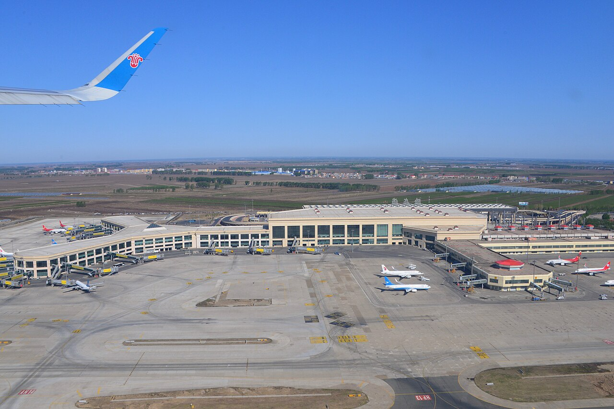

05:05 – 17:00 น. ✈️ เที่ยวบินBKK ➔ PVG ➔ ท่าอากาศยานฮาร์บินไท่ผิง T2
哈尔滨太平国际机场 T2
ออกเดินทางจากสุวรรณภูมิ 05:05 น. ต่อเครื่องที่เซี่ยงไฮ้ PVG T1 (10:20–13:55 น.) ถึงฮาร์บิน 17:00 น. รับสัมภาระแล้วนั่ง Airport Bus สาย 3 หรือ DiDi เข้าเมือง (~45 นาที)